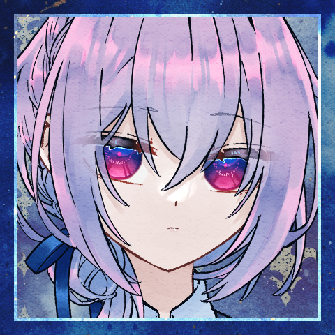
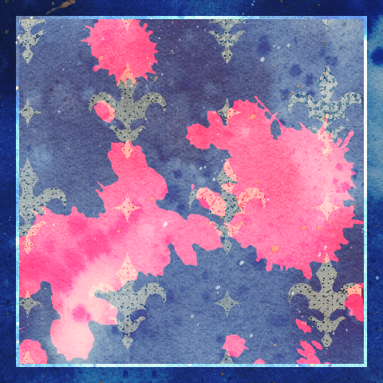

◆お茶会
クラレット
＊ティーセットの1つをエールに譲渡します
エール
＊ヤリイカエリートを１コセンバくんに譲渡。
クラレットさんからティーセットを１コ受け取ります
[ クラレット ] ティーセット : 2 → 1
[ エール ] ヤリイカエリート : 2 → 1
[ センバ ] ヤリイカエリート : 0 → 1
[ エール ] ティーセット : 0 → 1
GM
お茶会は庭園でPKから逃げたり追ったりして進行します。
GM
よかったら庭園シーン表をお使いください（1d6）
お茶会シーン1 行動：クラレット
クラレット
1D6 庭園シーン表 (1D6) ＞ 3
GM
3 ガゼボのある一角。ここなら休息できるかもしれない。
クラレット
果たして本当に休息できるんでしょうか？
クラレット
まあ、とにかく誘い出さないことには始まらないでしょう。ガゼボで堂々と休んで赤い靴が来るのを待ちます。
“赤い靴”
じゃあ、茂みを蹴り破ってまっすぐやってきます。
クラレット
他の仲間たちには茂みに隠れててもらっていたんですが大丈夫？ 居ない方の茂みだったよね？
“赤い靴”
すぐには攻撃しない。さっきの技を警戒している。
クラレット
「まあね。救世主の裁判の前にはお茶会がつきものよ」
クラレット
先程の険しい顔は消えて、落ち着いた笑みを返す。
クラレット
「あなただってそうでしょう。他の救世主を出合い頭に蹴り殺すことなんてなかなかできないはず」
クラレット
「この庭園に来られる程度に力のある救世主なら、流石にね」
“赤い靴”
「末期の言葉ぐらいは聞いてあげてもいいわよ。そこまで残酷ではないから」
“赤い靴”
一定の距離を保って歩いている。いつでも攻撃に入れる圏内。
“赤い靴”
「さっさと蹴り殺せるなら、それに越したことはないわね」
クラレット
赤い靴が鈍い陽光にかがやいている。
濁った血に濡れてなお、鮮やかにつやめいている。
クラレット
「最期の言葉はいいけど、あなたのことを聞かせてくれない？」
クラレット
「どこから来たの？ どうやって過ごしているの？ 何が目標なの？」
“赤い靴”
「ある程度は知っているでしょう？ “赤い靴”について」
クラレット
「ある程度でしかないわよ。前の持ち主の詳細も聞いていないし、出処がどこなのかも分からないし……」
クラレット
「お茶の一杯くらいは淹れてあげるから、どれか一つくらいは聞かせてくれていいんじゃない？」
“赤い靴”
「ただ……“踊る”ための靴でしかない」
クラレット
「……まあ、目的は少しくらいはっきりしたかもね」
クラレット
「“踊る”ためなら誰でもいいの？ 誰が履いても？」
“赤い靴”
「あなたって凶器にはこだわるタイプ？」
クラレット
「拘らない方だからお揃いね。別に使えるならナイフでも斧でも靴でも何でもいいわよ」
クラレット
「あたしたち、あなたの“回収”を依頼されてきたの」
クラレット
赤い靴の攻撃が届く範囲。それに一歩、一歩と近づいて。
“赤い靴”
つま先が円の軌道を描いて、あなたの首を刈りにかかる。
クラレット
完全に止めることはできはしないだろう。それでも身体は軋む。
“赤い靴”
止められ、届かずとも何度も攻撃を繰り返す。
クラレット
「あたしの脚と仲良くはしてくれないの？」
“赤い靴”
「あなたの脚以外とは、仲良くする必要はないの」
クラレット
「ふうん……肉体が損傷しても使えるの？」
“赤い靴”
「試して駄目だったら、別の身体を待つだけね」
クラレット
「じゃあ、ラサの身体で試してはいないのね？」
“赤い靴”
しかし、致命的な損傷があるようには見えなかった。
クラレット
「あのね、あたし、あなたを履きたいのは本当よ」
クラレット
「だって、そうしたらラサが戻ってくるかもしれないんだから」
クラレット
この靴は、どのような道程を経てここに在るのだろう。
クラレット
その道中で、こうして対話したひとは如何ほどだろう。
クラレット
教えてもらえないものは、想像もできない。
クラレット
険しい言葉が、不理解から来るのか、理解の裏返しなのかすら。
“赤い靴”
「そんなものを大切にしているから、死ぬのよ」
クラレット
苛立ちが伝染したようでもあるし、煽りに堪えかねてのことのようでもあった。
クラレット
「仲間を……家族を、大切にしないで生きることに何の価値があるの？」
クラレット
「あたしは、ラサを見捨てるくらいならここで一緒に死ぬ！」
クラレット
「……あなたには、解らないでしょうけど！」
“赤い靴”
choice[猟奇,才覚,愛] (choice[猟奇,才覚,愛]) ＞ 愛
“赤い靴”
2d6+3>=7 愛判定 (2D6+3>=7) ＞ 9[5,4]+3 ＞ 12 ＞ 成功
[ “赤い靴” ] ラストヤリイカ : 2 → 1
[ クラレット ] ティーセット : 1 → 0
[ “赤い靴” ] HP : 21 → 20
クラレット
2d6+4-8+2=>7 判定（＋才覚－横槍＋ティーセット） (2D6+4-8+2>=7) ＞ 9[4,5]+4-8+2 ＞ 7 ＞ 成功
[ “赤い靴” ] 疵:仲間 : 0 → -1
“赤い靴”
断頭斧のように振り下ろされた脚は狙いがそれ──
クラレット
脅し、ではないだろう。そのような性格ではなさそうだから、狙いが逸れた？
“赤い靴”
今度は死神の鎌のような横薙ぎが、狙い過たず振るわれ──
一方その頃……
エール
「一人で行っちゃうなんて、興味なさそうに見えてなんかあったのかなあ」
茂みの中。クラレットと"赤い靴"の様子を窺いながらぽつりと。
センバ
「どうでしょう、なんか昨日はやたら緊張してる雰囲気はありました……」
センバ
「なんか荷物漁ってたんです。どうしたのかな～って話しかけたら緊張かもって」
エール
「荷物」うーん。また逆に首傾げ。
「まさか、赤い靴持ってたなんてはずないし……」ほんとにない。
センバ
「依頼のあの時は普通のローファーでしたよ」
センバ
「だから、本当に多淵さんなのか……いや、……それ言い出したら何でもありですね」
エール
「見た目だけが彼女を模している……とかなら」
エール
「そりゃあ、救いはある話だけれども」ごそごそ。茂みの中で体勢を変える。音を立てないようにしながら。
センバ
「不意にひょっこり戻ってきてくれないかなって思っちゃいます」
エール
「それで」睨むように赤い靴そのものを見ている。
エール
「三人よりかは、ましだろうけれど」同じことを考えていたらしい。息をつく。
エール
「三人で覚悟を決める必要は、ありそうだ」靴の語る言葉を聞いている。
センバ
「多淵さんが戻ってこない最悪は想定しないとですね」
エール
「寸止めなんてする余裕は、残らないだろうからね……」
エール
考えている。
自分が迂闊に興味を示さずに、きっぱりと依頼を拒んでいたら。
公爵家の依頼人に背を向けていれば。
センバ
「……ただ、いずれにせよ。時間の問題だったと思います」
エール
「…………ん」
クラレットと赤い靴の方からは、今は目を逸らさない。
エール
クラレットは、まだ大丈夫。のはずだ。
あれは彼女が”踏み込む”ための所作。疵に触れるための手順。
分かっていても肝は冷える。
センバ
視線は逸らさない。未だ攻撃は届かない。彼女の実力は知っている。
エール
同じくらいに彼女の脆さも知っている。
パーティの中で最も打たれ弱い彼女。
頼もしさと裏腹の、事実としての脆弱さ。
センバ
何度も場を潜り抜けて来た。だから信じている。今は。
エール
信じている。信じているからってなんだ。
信じて、任せて、盲目になって。
その末失ったものがあったくせ？
センバ
「……戻って来るって、信じたい所ではありますね。それでクラレさんが居なくなるのは嫌ですけど」
エール
戦力的には、クラレットが抜けているよりも、ラサが抜けている状態の方が。
自分たちはバランスがいい。
エール
そう思ったことを、口に出すか迷って、出さない方の判断を下す。
エール
そんな、毒にも薬にもならない夢物語だけ吐いて。
センバ
「……俺は誰も死なないで普通に終わって欲しいですよ」
エール
賢しらな少女の、仲間を想う言葉を聞いている。
エール
確かに少女の命を刈り取るだろう暴力を前に、衝動を抑えて膝をつく。
センバ
まだここから出て行くべきではない、と判断している。
エール
仲間を見殺しにする可能性を看過して。
仲間の見出す勝機に希望を託しながら。
センバ
そして、自明ではあることだが。
一人で三人に勝つことは難しい。
だから俺たちは待っていた、割って入れる瞬間を。
エール
仲間が十分にその疵を探り、暴き立て、露わにする成果を。
確かめたのならば、もう十二分。
エール
疵のままに振るわれる力を、疵の力で受け止める。
センバ
そしてクラレさんの手を引く。
今出来る事は十分した、ハズですよね。
エール
「……ご承知、だったろうに」
分かっていても痛いな。流石に。息を抑えながら。
クラレット
「じゃあね、“赤い靴”。あたしの足にぴったりなことを祈ってるわ」
お茶会シーン2 行動：センバ
GM
5 女王のクロケー場。フラミンゴの亡者が首を狙っている。
GM
実際にはフラミンゴの亡者だったものが転がっています。
センバ
どれも既に事切れた後の姿だ。彼女の仕業だというのか。これが。
センバ
次は俺がやる、とカッコつけたのは良いんだけど。
エール
殿でクラレットを気遣いながら周辺を警戒している。
“赤い靴”
蹴り飛ばされたものと思しき肉塊が三人目掛けて飛来する。
エール
クラレットに向けられたものから優先して叩き落とす。
エール
肉塊の潰れる嫌な感触が腕に伝わるが、それだけだ。
“赤い靴”
おびただしい腐敗臭と血臭があたりに漂う。亡者の肉片だ。
クラレット
エールが叩き落すのを見守るのみ。いつもの光景だ。
センバ
「……まだお茶会って事に、なってますから」
センバ
「じゃあ、殴り合いでもしますか。赤い靴さん」
センバ
「……俺たちを倒したら次はどうするんですか」
“赤い靴”
「このゲームは最後の一人になるまで終わらないみたいだし」
“赤い靴”
「“踊る”以外の手段を、私は知らないもの」
“赤い靴”
「自分の履いてる靴に毎日話しかけてみたら」
“赤い靴”
「ある日、突然気さくに喋りはじめちゃったりして」
センバ
バットを手に取った。
ふざけるな。靴が喋るなよ。そんなことあり得る訳がない！！
“赤い靴”
「あなたの都合の良い現実を、押し付けてみなさいよ」
センバ
寝て起きたら普通に明日が始まって。
空想やファンタジーのような、自然現象であり得ないことは存在しない。
センバ
そんな都合の良い考えを俺は押し付けるようにして足下を狙う。
“赤い靴”
「そいつを倒せば、あなたのお友達は帰ってくる？」
センバ
「俺の世界じゃ靴は喋らない。魔法は無いし、漫画の出来事」
“赤い靴”
「あなたの世界では、そんなに確かなものなのかしら」
センバ
思考停止。俺は都合の悪い言葉を受け止めない。
センバ
クソつまんねえくせに、一番強固な顔して寄って来る。
センバ
「探しますよ。多淵さん遅いな、まだ戻って来ないのかなって」
センバ
現実に縋り付いているくせして、都合の良い時だけ現実逃避するんだ。
センバ
脛を狙った。足先ばかりは狙えない。そもそも、避けるにも受けるにも。
“赤い靴”
「狙うなら頭のほうがいいんじゃない？」
“赤い靴”
潜るように上体を沈め、水面蹴りを放つ。
センバ
爪先は狂気。
凶器であり狂気。
水面を滑るような動き。
それを見て受け止めにかかり、
センバ
起き上がる。
普通ならば死んでいただろう。
俺も結局、普通の人間では居られない。
センバ
「身体が捩れて、足が壊れて、血肉が軋んでも？」
センバ
「身体が壊れても続けるなら、制御なんて出来てない」
“赤い靴”
「踊りの果てに、自らを失うとも知らずに」
センバ
勝手な想像だ。この人は、違う。違うと信じている。
違うんだ。
センバ
「俺は、そんな力なら終わりにした方がいいと思いますよ」
“赤い靴”
choice[猟奇,才覚,愛] (choice[猟奇,才覚,愛]) ＞ 愛
“赤い靴”
2d6+3>=7 愛判定] (2D6+3>=7) ＞ 4[3,1]+3 ＞ 7 ＞ 成功
[ “赤い靴” ] HP : 20 → 19
[ センバ ] ティーセット : 1 → 0
センバ
2d6+4=>7-1+2 判定（＋猟奇） (2D6+4>=8) ＞ 7[2,5]+4 ＞ 11 ＞ 成功
センバ
「行動に出すの、あんま得意じゃないんです」
“赤い靴”
手でそれを受け止める。指の骨の折れる小さな音がした。
センバ
少し嬉しく思ってしまう。
俺も結局、変わらずには居られない。
センバ
ああ、そうだよ。主人公みたいだろ。これ。
カッコつけやがって。
[ “赤い靴” ] 疵:力 : 0 → -1
センバ
ただ、そう思わないとやってられないんだよ。もう。
一方その頃……
エール
クラレットをいつでも守れる位置取りを保ちながら、
そういうこと言うよなあ、というようなことを考えている。
エール
センバのこの手の言動には、ラサよりもヒヤッとさせられる瞬間がある。

クラレット
センバは、いつもあの調子だ。
気が狂っているほどにあの調子なのだ。
クラレット
やり合いが始まったと判断して、センバとラサの二人から距離を取る。
エール
その中間。
どちらに対しても援護が可能な立ち位置。
エール
時折救世主めいた策を考えたり、勘繰りを見せたりなどするが。
あくまでも後天的な振る舞い。未だに彼の中には根付いていない。
彼の本質と強みは、いつまでも揺るがぬ常識と、それを衒いなく振り翳せる独善にある。
エール
自分が意図的に為す思考停止を、彼は息をするようにやり遂げる。
クラレット
「あれで初心な態度を貫き続けているのも異常なのにね」
エール
彼の常識に自分たちは太刀打ちできない。
余計な口を挟む必要もない。
エール
そもこの凄絶な猟奇の交錯へ、生半可に割って入れるはずもないのだが。
エール
「だいぶ無理して勘繰ってたんだなって、思う」
エール
「まあ、あれはあれで、彼の常識だったのだろうけれども……」
クラレット
「まあ、あの時は……そうね、『あんなうまい話があるはずが』が彼の常識ってところかしら」
エール
「居心地は、悪そうだった――け、ど」身構える。
吹き飛ばされたセンバのさまを注視する。
クラレット
吹き飛ばされた、が、また立ち上がる。
流石にこの実力まで上り詰めただけある。
エール
じりじりと間合いを測るばかりのこの時間は苦手かもしれない。自分も。
お茶会のたびに、そんなことを思っている。
エール
「……常識があって、良心がある。
かれの中の常識は、どうにも……ずいぶんと」
クラレット
「元は平和な世界から来ているんでしょうね」
クラレット
「それでここまで適応できるのって、どうなのかしら」
クラレット
「元からか、堕落の国のせいかはともかくとして」
エール
「ラサが戻ってくることを、望めるくらいだからね」
クラレット
「あたしもけっこう、ラサが戻ってくるのを期待しているのだけれど」
クラレット
「じゃあ、三人そろって仲良く筋金入りね」
エール
約束をしようか、と言いたかった。
ラサを取り戻すために全力を、最善を尽くそうか、なんて。
エール
でも、多分、自分にはその約束ができないから。
エール
だからこうして、当たり障りのない言葉を返すことしかできなかった。
お茶会シーン3 行動：赤い靴(1回目)
GM
それを追う過程で、庭園の大樹が嫌な音を立てて、三人に倒れかかってくる。
エール
クラレットを庇う。センバは自分でなんとかできるだろう。
GM
特にダメージは受けなくていいですが、いろいろあって分断されます。
エール
「っ…………」混乱の中に、背に庇っていたはずの彼女を見失い。
クラレット
「生きてるわ」
大樹の向こう側に向かって声を掛ける。
クラレット
「ただ、……」
目の前に横たわる機の大きさたるや。
「そっちに行くのは時間がかかりそうね」
“赤い靴”
話しているうちに、靴音がクラレットへと近づいてくる。
エール
「じゃあ、すぐに――」と言いたいところだが。
本当に大きすぎる。
センバ
「跳んで登るにしても迂回するにしても遠すぎますよ」
エール
脅威度５の救世主を分断する規模。
声届いてんのスゲエかも。
クラレット
声も疵の力かなんかのおかげかもしれません。
GM
あんま細かく突っ込まんといて 話の都合だから
センバ
「とにかく早く合流した方がいいですよ……ッ」
エール
「……私は登るのを試す。
センバは迂回できる？」
クラレット
二人の相談は、流石に聞こえない程度には離れているだろう。
今はただ、近づく足音に注意を向けるのみ。
エール
言うやいなや、木の幹に取りついて登り始めます。
“赤い靴”
とん、と跳んで庭園に積み上がった瓦礫の上からクラレットを見下ろす。
クラレット
「そろそろラサを返す気はないかしら？」
クラレット
「もちろんあなたとの逢瀬も期待してるわ」
クラレット
「あたしの家じゃそんなの履く機会なんてなかったから」
“赤い靴”
「はじめからこの装いだったわけではないわね」
“赤い靴”
「最初はみすぼらしい見かけのものだった」
“赤い靴”
「年老いた、靴屋の女が古い羅紗（ラシャ）を縫って、作った不格好な一足の靴」
クラレット
「それがどうして、こんなに鮮やかなものに？」
“赤い靴”
「ずっと昔のことだったから、細かいことは忘れてしまったな」
“赤い靴”
「あるいは、どこかで混ざってしまったのか……」
クラレット
「似たような話が沢山の世界に在るという」
クラレット
「それらが混ざったのか、それとも……」
“赤い靴”
「誰かから見れば、ひどくみすぼらしいものでも」
“赤い靴”
「誰かの心を奪い、呪いを育てるには充分だったということだけが、確かだった」
“赤い靴”
「やさしさから、裸足の孤児に靴を与えなければ……」
“赤い靴”
「あなたたちの物語は、なにをきっかけに始まった？」
“赤い靴”
「ラサ、と呼ばれたかわいそうな子が、私のところへとやってきた時に？」
クラレット
「ひとはそれぞれ物語を持つ。あたしたちのうちの誰かの物語が始まったときを話すなら、際限がないわね」
クラレット
「いい加減、反抗期はやめてあたしたちと仲良くしてくれないかしら？」
クラレット
「ふふっ、さっきのセンバの話を根に持ってる」
“赤い靴”
「どこまで行っても靴は踊るだけの存在……」
“赤い靴”
「それが結果として誰かを活かすこともあれば」
“赤い靴”
「仲良くできていたと、ほんとうに思っているのかしら？」
クラレット
「あなたが知ったことじゃないでしょう」
“赤い靴”
「教えてほしいのよね。私にもわからないから」
“赤い靴”
「たった一人で、私のところに、来たのかしら？」
“赤い靴”
だってあなたたちは、仲間なんですから。
エール
Choice[猟奇,才覚,愛] (choice[猟奇,才覚,愛]) ＞ 猟奇
エール
2d6+3=>7 判定（＋猟奇） (2D6+3>=7) ＞ 6[2,4]+3 ＞ 9 ＞ 成功
エール
＊ヤリイカエリートを使用します・・・・・・・
[ エール ] HP : 26 → 25
[ エール ] ヤリイカエリート : 1 → 0
[ “赤い靴” ] 手袋 : 2 → 1
“赤い靴”
2d6+5-5+2>=7 才覚判定 (2D6+5-5+2>=7) ＞ 11[5,6]+5-5+2 ＞ 13 ＞ 成功
クラレット
最後に話したのはセンバだという。確か緊張していると話していたとか言っていたか。
クラレット
それが本当なのかは分からない。何か思惑があって嘘を吐いたのかもしれない。
“赤い靴”
「愛や憎しみという不純なものを脱ぎ捨てて」
“赤い靴”
円を描く軌道で、赤い靴がクラレットに迫る。
“赤い靴”
「それが、私の与えられる、たった一つの救い！」
クラレット
一人では、非力な女でしかない。六ペンスコインの力で、死は免れるだけ。
クラレット
身体は軽々と吹っ飛び、瓦礫にぶつかる。
クラレット
「今のは……ッ、……あなたが考えさせるから、じゃない」
クラレット
胸倉を掴まれて、息が詰まる。それでも口端に笑みを作る。
クラレット
「もう少し初歩的なステップから教えてくださらない？」
“赤い靴”
「手取り足取り覚えさせてあげるもの……いや、“足取り足取り”かな？」
“赤い靴”
指が折れたままの手で髪を掴み、瓦礫だらけの地面に叩きつける。
“赤い靴”
「ご自慢の頭も、うまく動かないかしら……」
クラレット
揺れてぶれて真っ白になる頭を何とか働かせようと呻く。
“赤い靴”
「その才覚の無力さを強く味わったものこそが──」
クラレット
奥歯を噛み締め、隙間から獣のように唸り声を漏らす。
センバ
息が切れている。遠回りをして、幾つもの幹を越えた。
幾つもの枝を踏み崩した。幾つもの葉を靴裏で擦り潰した。
クラレット
たやすく翻弄され、踊るように吹き飛ばされ、踏み躙られる姿。
センバ
踊っていた。踊っている。踊らされている。
無事なのは片方だけ。どちらも無事ではないとも言える。
センバ
俺は目を閉じなかった。
踊りは終わりだ、俺が終わらせる。
センバ
それが日常に戻る方法だと信じて。
靴を、その舞踏を、止めるために暴力を振りかざす。
“赤い靴”
腕を盾にして受ける。みしり、という嫌な感触。
エール
靴の気の逸れた隙を掻い潜って、血濡れのクラレットを引き剥がす。
センバ
もう一度、バットを振りかざす。一方的に潰すように。
エール
センバに少し遅れて大樹の幹から飛び降りていた。
どうしようもない手遅れぶりに唇を噛みながら。
エール
「クラレット――」なにがしか、呼びかけはするが。
エール
腕の中の仲間には届いていない。
彼女が聞くのは別の声だけ。
センバ
何でも良い。何でもいい。なんでもいい。
俺はどうしてを考えない。考えたくはない。
[ クラレット ] 賢しらな瞳 : 0 → -1
お茶会シーン4 行動：エール
GM
お茶会の残りはエールの手番、PKの手番1回となっています。
エール
では、センバを殿にその場を離脱し、赤い靴からは距離を取り――
エール
クラレットさんの疵を……舐めたいですが……
エール
1d6 はい……間違えました…… (1D6) ＞ 5
GM
5 女王のクロケー場。フラミンゴの亡者が首を狙っている。
エール
襤褸屑のようにされたクラレットを抱えたまま、慎重に膝を折る。
エール
祈りの際には、周囲に気を払う余力は失せる。
エール
誠心誠意にしんのそこから、対象を想うているという事実が。
クラレット
赤に塗れてぐったりとする身体が、祈りに応じて生命力を取り戻す。
センバ
声に僅かに振り返る。そして周りを見るのに戻った。
クラレット
傷があらかた塞がって、ただ、胸元のひとつの疵から流れ出る赤は滲むまま。
クラレット
「……そんなにお姫様のような扱いを受けたいわけじゃないんだけど」
エール
けれど、視線がその胸の赤から逸らせないまま。
センバ
良かった、いつも通りだ。と僅かに安堵した。
そう、こんな風に俺たちは危機的な状況を切り抜けてきた。

クラレット
胸元の疵から流れ出た血は、白いエプロンを染めている。
エール
……珍しいことではない。
救世主の力は万能とは程遠い。
クラレット
痛みの引かないのに気づいて、眉を顰める。
エール
その度自分の力不足と、愛の不足を実感する。
クラレット
心の疵が力を持つ世界。
疵を抉られた痛みと流れ出る血が、どうして身体に表れないといえようか？
エール
格上を相手に血塗れの戦いを繰り広げてこそ、
繰り返し裁判を積み重ねてこそ、今の自分達はここに在る。
エール
時に生死の境を彷徨いながら、
屍山血河を乗り越えて、誰一人欠けないままにここまで来た。
エール
一人が抜けて、聖遺物の傀儡となり。
いまだかつて相対したことのない強大な敵として、
自分たちの命を狙っている。
エール
何もかもが"今まで"とはいかないと。
鈍った才覚がその事実を認識している。
エール
これほどまでに激しい彼我の戦力差が、今までにあったろうか。
エール
目の前の相手を、こんなにも殺したくないと思ったことは？
エール
あまりの圧倒的な戦力差の中で、何もかもが逆風に感じられている。
その自覚がある。
"いつも通り"では勝てない。いつものやり方は通用しない。
エール
何らかの奇策、決定的な一手、リスクを甘んじた上での博打。
無理に無理を積み重ねた上で奇跡を掴むことで、辛うじて勝利が得られる。
エール
……裁判の始まりを告げるのは、きっと彼女の方だ。
いつだって彼女はそれを始められる。
今は救世主らしい様式に付き合ってくれているだけ。
エール
恐らくだが、彼女がもう一度自分たちに辿り着いたなら。
それが最後で、自分たちに与えられる猶予はもはやない。
エール
クラレットを見る。
その胸に咲く赤い花を、その顔を。
クラレット
単に傷が痛むからではない。
『赤い靴』の言うことを気にして。
エール
その心の疵の深さは、容易く致命傷に繋がりうる。
クラレット
「どうして、一人で行ってしまったんでしょう」
エール
情の深い彼女が、
ラサを特別に可愛がっていた彼女が。
エール
「自信満々に振る舞うし、その通りの強さも持ち合わせるけれど」
クラレット
「……結局、あたしも何も分かっていなかったのかもしれない」
クラレット
「だから、ラサは何も言わずに出ていったのかも……」
センバ
「俺も、あの人のことはわかりません。ただ、」
センバ
「わかりたかったかと言われると、そうじゃなかったかもしれない」
センバ
「二人は、どうだったんですか。わかる気、ありました？」
クラレット
「あたしだって、ラサのする突飛な話を信じてはいなかったから」
クラレット
「結局、何もする気のない人と変わりなかったのかもしれない……」
エール
沈黙がそのまま肯定となる。
これが一番ましな形の肯定であると知っていたから、そうなった。
エール
真の意味で彼女を理解できるとは思えなかったから。
共に在れることをだけ喜ばしく思って、相手への興味は二の次だった。
エール
どうにかその疵の機嫌をとって、
できる限りに快くいてもらいたかった。
嘘ではないが、ひどい欺瞞だ。
エール
才覚を武器とするしかなかった、
それでも愛を手放せずにいる少女。
クラレット
「……彼女には、邪魔だったのかもしれない」
エール
その痛ましさが今の自分には目の毒で、
けれど、ひどく眩しく映っている。
クラレット
「まったく、欲しいものと違っていたのかも」
クラレット
「あたしはラサのことが好きだったわ。突飛だけれど独創的で、いざというときは冷静になれる彼女を」
クラレット
「ラサを……守りたかった。裁判でいつも守られてばかりだとしても」
クラレット
「旅の中での生活や、考えていることだとか、不安なことだとか……そういうものを、手助けしたかった」
クラレット
「……全部、余計なお世話だったのかもしれないわね」
エール
「ラサがほんとうは、どう考えていたかなんて」
エール
「そんなのは、ラサにしかわからないことだよ」
エール
＊手番の宣言。
クラレットの心の疵『愛の奴隷』を愛で舐めます。
“赤い靴”
choice[猟奇,才覚,愛] (choice[猟奇,才覚,愛]) ＞ 愛
“赤い靴”
2d6+3>=7 愛判定 (2D6+3>=7) ＞ 11[5,6]+3 ＞ 14 ＞ 成功
[ “赤い靴” ] ラストヤリイカ : 1 → 0
[ “赤い靴” ] HP : 19 → 18
[ エール ] ティーセット : 1 → 0
エール
2d6+4+2-6=>7 判定（＋愛） ティーセット 横槍 (2D6+4+2-6>=7) ＞ 9[6,3]+4+2-6 ＞ 9 ＞ 成功
クラレット
期待。期待……。
なんのことだろう、とすこしだけ考えて。
クラレット
『あたしもけっこう、ラサが戻ってくるのを期待しているのだけれど』
クラレット
エールとの話で、そう言ったことを思い出す。
クラレット
多少なり解っていると思っていた相手は理解の遥か遠くに行ってしまって。
クラレット
「ラサが戻ってきて、あたしたちに理由を教えてくれること」
クラレット
「さあ……また何かの陰謀だと思うのかしら」
クラレット
「……そうじゃないとラサらしくないわ」
センバ
「しつこいくらいがちょうどいいんですよ。こういうの、多分」
エール
嘘じゃあないよ。思っているんだ。
想っているとも。
エール
けれど、ほんとうのところは、
それは決して叶わないだろうとも思っている。
エール
わたしたちにその余裕はない。
生き延びることができるかさえ怪しい。
エール
ラサのことが好きだよ。
なんだかんだと口喧しいながらも、わたしのことを受け入れてくれた。
わたしは鈍いから、フォローだってたくさんにさせた。
エール
クラレット。きみのことも好ましく思っている。
きみのその擲つ愛は、わたしには本質持ち得ないものだ。
それが眩しくて、それが失われないことを祈って、今そこに在ることが尊ばしい。
エール
けれどわたしは先程に、
きみを見捨てる選択肢を見た。
エール
きみの心の疵を癒し、立ち直らせるよりも、
あのくつに対抗しうるなんらかの聖遺物を探す道を模索しかけた。
エール
きみの疵の深さを看過して。
せめてセンバだけでも生かせないかと。
エール
……それを早々に諦めたのは、実現可能性の低さを見てのこと。
この広い庭園で都合の良い聖遺物を見つけ出すよりは、
今ここにいるきみを癒すほうが、ずっといいと思って。
エール
愚かなわたしは、結論だけでなくその過程でさえも愚かだ。
エール
……それでもこの選択が、この祈りが、この言葉が。
エール
真なる尊い愛を持つきみの心を、いくばくか動かすことが叶うのなら。
エール
それが人を救うに値するものであると思うことが、
[ クラレット ] 愛の奴隷 : 0 → 1
“赤い靴”
「楽しそうな話で盛り上がっているようね──」
お茶会シーン5 行動：赤い靴(2回目)
“赤い靴”
「もっとも、逃げようが立ち向かおうが、結果は同じだけど」
クラレット
「話が早くて助かると思ってもらいたいわね」
センバ
「結果は同じかは、分からないと思いますよ」
エール
クラレットを庇うように腕を出し、"赤い靴"と相対する。
エール
「存外、希望を持つ者は少なくはないのではないかと」
“赤い靴”
「私という力を齎す宝物を前に、ギラギラとした眼差しを向ける者」
“赤い靴”
「あなたたちのように、大いなる思い違いをしている者」
センバ
「……勝てると思うのは、間違いってことですか」
“赤い靴”
「あなたたちは、私に勝って何を手に入れる？」
センバ
考える。彼女の挙げる中には、無い。
本当に俺が欲しいものは何も。
“赤い靴”
「私には理解しがたいことに。どれも違うのでしょう？」
クラレット
「少なくともあたしは違うかしら。二人は？」
エール
嫌な予感がする。胸騒ぎが。
自分の思い違いであればよいが。
“赤い靴”
「なら、残念ながらそれは、決して得られない」
“赤い靴”
片方の靴を、無造作にその場に落とした。
センバ
口の中に鉄錆の味が満ちた。
苦い。感情と同じ味だった。
“赤い靴”
“ラサ”がつま先から音を立てて朽ち果てていく。
[ センバ ] ヤリイカエリート : 1 → 0
[ エール ] ヤリイカエリート : 0 → 1
エール
Choice[猟奇,才覚,愛] (choice[猟奇,才覚,愛]) ＞ 猟奇
エール
2d6+3=>7 判定（＋猟奇） (2D6+3>=7) ＞ 11[5,6]+3 ＞ 14 ＞ 成功
[ エール ] HP : 25 → 24
[ エール ] ヤリイカエリート : 1 → 0
[ “赤い靴” ] ティーセット : 1 → 0
[ “赤い靴” ] 手袋 : 1 → 0
“赤い靴”
2d6+5-8+4>=7 才覚判定 (2D6+5-8+4>=7) ＞ 4[1,3]+5-8+4 ＞ 5 ＞ 失敗
クラレット
みしみしと音を立てて崩れるラサの身体を見る。
クラレット
つま先だけだからまだ、なんてことではないのは分かっている。
“赤い靴”
何事もなかったかのように靴に片脚を収め直す。
“赤い靴”
ラサの──“救世主の残骸”の崩壊はそこで止まった。
クラレット
歯を食いしばった隙間からかろうじて声を返す。
クラレット
怒りで、悲しみで、叫び出したいのを、堪えている。
エール
”全滅した"救世主のうち一人の身体に寄生したという話。
エール
その意味について、もっと早く考えるべきであった。
エール
……クラレットであれば気づき得たろう。
愛にその目を濁らされてさえいなければ。
エール
自分は、賢しげに思考を回してさえ、これだ。
クラレット
「……おかしいと思っていたわ。亡者の蔓延るこの庭園に入って“赤い靴”に出会うまでしておいて、無傷なんて」
クラレット
「いくら巧妙に身を隠しても……傷一つない姿で居られるわけがない」
“赤い靴”
「三人そろって、疑り鳩に目玉をほじくられたみたいな顔」
“赤い靴”
「可能性を考えすらしなかったのかしら……」
クラレット
本当は、頭の片隅にずっとあった考え。
でもそれを意識しないようにしていた。
クラレット
希望を持ってさえいれば、まだ決定的なものがないのであれば、助けられるかもしれないなんて。
エール
考えすらしなかった。自分には最早どうでも良いことだったから。
それでもって二人の士気を高めようとしたことを思えば、ひどく滑稽な見落としであると言えるが。
センバ
思考停止だった。
その考えが見えても向き合うような気はしなかった。
そして今も、決定的な答えとして向き合う気はない。
エール
……しかし、自らの愚鈍を悔いている場合ではない。
今は。
エール
目の前に、自分たちを殺さんとする救世主がいる。
クラレット
「いま、ひとつ理由がなくなったけれど」
クラレット
「理由がなくなったって帰してはくれないんでしょう、あなた」
クラレット
「それなら同じよ。あなたに勝つために、生き残るために戦うしかない」
“赤い靴”
「私は、偽りの希望を抱いて踊られたくないの」
エール
「ラサの代わりにあれを履くのは、あきらめて」
クラレット
「……残念だわ。あの靴はきれいだし、ラサの真意は今も知りたいけど」
クラレット
「生き残るには、仕方ないのでしょうね」
センバ
これ以上、失うことに俺は多分耐えられない。
皆に従うことに決めた。多数決だ。
エール
心中を望まれなくてよかった。
だなんて口に出すのは余計だろう。
流石にこれは、間違っていないはずだ。
“赤い靴”
「愛や憎しみという、不純なものを脱ぎ捨てて」